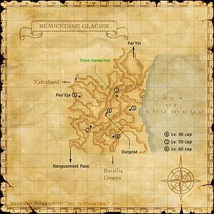

Level 75 reference · Zenith rules
|


Walkthrough
- Examine the Carrier Pigeon Letter (key item) that you received when completing The Stars of Ifrit quest.
- Talk to Carmelo, who will give you a key item Carmelo's Song Sheet and ask you to place it at the Mirror Pond.
- Go to the pond at G-10 in Beaucedine Glacier. A portion of the pond will become selectable (the target name is "Mirror Pond") in the presence of dark-element weather or clear weather; this target disappears when there is single or double ice-element weather. Select the "Mirror Pond" for a cutscene.
- You can check with Maleme (a Weather Checker) before going to the glacier, to see what the weather will be like there. A weather message of "gloom with occasional snow" means that snow will taper on and off; you can go that day and wait around for the snow to clear.
- Return to Bastok and talk to Carmelo to complete the quest and receive your reward.
Game Description
Client: Carmelo (Steaming Sheep Restaurant, Port Bastok)
Summary:
- Carmelo wants to start his life anew. You must go throw the song sheet he had written for his former love into the Mirror Lake on the Beaucedine Glacier.
Adapted from Eden Wiki: Love and Ice · Contributors and history · CC BY-SA 4.0. Revision 9901. Layout, links and optional background text adapted for Zenith.